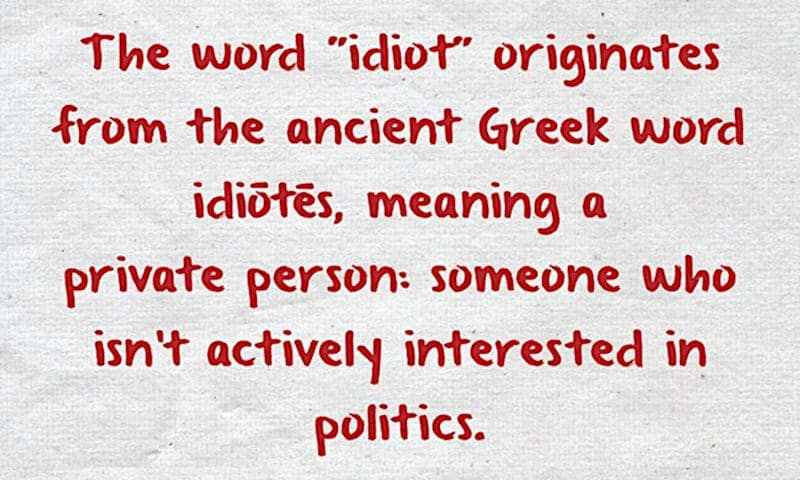

Politics and democracy for dummies
Initially published on the same day on Facebook and LinkedIn.
Seeing the picture above, a meme shared on Facebook, I decided it was a good time to explain how etymology works. So, let's start this journey!
Idiots in politics
The word "idiot" originates from the ancient Greek word idiōtēs, meaning a private person: someone who isn't actively interested in politics.
That's the etymological meaning of the word "idiot", or the original meaning of the word, at the time of ancient Greece. At that time,
Machiavelli had not yet written his book entitled "Il Principe", and hence politics — in modern terms — was not even known.
Therefore, in order to understand the etymological meaning of the word "idiot", we have to associate it with the meaning of other words related to it
at that time.
In primis, "politics", among all other words meanings.
Politics: late Middle English: from Old French politique 'political', via Latin from Greek politikos, from politēs 'citizen', from polis 'city'.
What was politics about?
So, the ancient Greek word "politics" came from "polis," another ancient Greek word that can be translate in "city" — but not just the city in terms of buildings or geographical area — rather the concept of the city as a social space with its "agorà", another ancient Greek term which can be translated to "square", but for them had a completely different meaning (functional meaning, also) from ours, like "polis".
Another ancient Greek word related to "politics" is "democracy", which comes from "demos" (people) and "kratos" (power). Well, at
that time "people" did not mean ALL the people. Women were not universally considered "people", slaves were common, and even among "free" people (not slaves), not all of them had "citizenship" and they were not considered part of the "demos" as we would have been intended nowadays.
For example, in the
Starship Troopers film, males and females had to have served in the military before earning citizenship. Among Spartans, it was a strict rule or related to give a birth for the females. In Athens, there were many other ways to earn it, like art, philosophy, and "science" which was not modern science as we intend it today, after Galileo Galilei.
On the contrary, hand-working was considered "inadequate" for citizens unless art and sophisticated mechanisms (engineering before Engineering was) were involved.
Polis and democracy
Polis meant "civitas" —
vivere comune civile, the fundamentals of the society — compared to those who were living outside the "polis", in the wild by their own means. In the "agorà" placed at the center of the "polis" — where "common people" were doing market trading (for money or future payments upon a future agreed delivery) or exchanging (Provenz. barata XIV sec., barter) goods — citizens were deciding in a democratic way.
Are we going to war against the nearby city, to sack them, or trading the good olive harvest for cleaning the streets and building a public fountain?
Those who were voting for war were going to war. Others voting for cleaning the streets were paying non-citizens (or using their slaves) for cleaning the streets.
Conclusion
Therefore, politics and democracy were about deciding WHO does WHAT, not about WHO should f*ck all of US in our names because a vast number of ignorant people voted by their guts (or traded their votes for a piece of bread), idiots!
ChatGPT-SoNia
In order to explain the reasons behind the posts shared on Facebook and Linkedin, and after having written
this paper, I have leveraged the session prompt SoNia v3.5.0,
here saved, to obtain a feedback.
Dialoge about "Politics and democracy for dummies" with ChatGPT-SoNia (2025-03-03)
As you can read, SoNia leveraging the peer-review rules framework and when explicitly ask for, provides an academic-like pros-cons review with related ratings of the document content.
Instead, immediately after questioned again about the general meaning, reasons behind delivering a Karma lesson and the social media communication, SoNia contradicts its 75% rating related to overall educational value, giving more value to the human and social impact of the message rather than the formality, informative-density and precision which an academic paper requires, usually.
Which is exactly what is expected by SoNia and defines its added-value compared with AleX which is the academic-like peer-review dedicated prompt, essential but not for divulgation oriented not-so-much user-friendly for common people (cfr.
The session prompts v3 for AI-driven chatbots).
Share alike
© 2025, Roberto A. Foglietta <roberto.foglietta@gmail.com>, CC BY-NC-ND 4.0